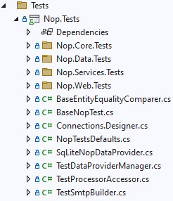
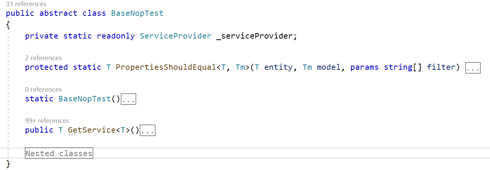

單元測試
我想大家都知道單元測試（UNIT test）的概念。我們知道單元測試的用途，也同意這是開發可靠軟體過程中重要的一環。在本文中，我們將不討論這些議題。您可以輕鬆地在網路上找到所有必要的資訊，例如透過以下連結：
- https://en.wikipedia.org/wiki/Unit_testing
- https://docs.microsoft.com/dotnet/core/testing/unit-testing-best-practices
- https://en.wikipedia.org/wiki/Test-driven_development
在本文中，我們將熟悉 nopCommerce 專案中的測試功能，並學習如何新增測試以及檢查其執行效能。我們不會測試抽象的任務，而是會從頭開始為現有的功能編寫一個完整的測試。在文章最後，將提供一個包含所有程式碼變更的參考提交（commit）連結。
功能概覽

在截圖中，您可以看到 Nop.Tests 專案的結構。像是 Nop.Core.Tests 這樣的資料夾包含了對應方案專案的測試程式。其他檔案則負責輔助類別與基礎類別。讓我們來看看 BaseNopTest 類別。
BaseNopTest
這是主要用來公開測試用 IoC 容器，並讓我們能夠運用所有相依性注入（DI）優勢的抽象類別。

此類別包含兩個可供子類別使用的方法：
PropertiesShouldEqual：用於比較資料庫實體的所有欄位與模型欄位。GetService：允許運用相依性注入的優勢，並簡化建立測試所需類別的過程。
IoC 容器的初始化是在該類別的靜態建構函式中進行；此建構函式包含了大部分的程式碼。
IScheduleTaskService
我們將以建立實作 IScheduleTaskService 介面的類別測試為例。
public partial interface IScheduleTaskService
{
System.Threading.Tasks.Task DeleteTaskAsync(ScheduleTask task);
Task<ScheduleTask> GetTaskByIdAsync(int taskId);
Task<ScheduleTask> GetTaskByTypeAsync(string type);
Task<IList<ScheduleTask>> GetAllTasksAsync(bool showHidden = false);
System.Threading.Tasks.Task InsertTaskAsync(ScheduleTask task);
System.Threading.Tasks.Task UpdateTaskAsync(ScheduleTask task);
}
如您所見，這是一個簡單的介面，但同時它允許 nopCommerce 執行非常重要的任務，例如向顧客發送電子郵件。因此，我們需要確保它能正常運作。接下來，我們將為該介面的每個方法撰寫測試。
Note
我們雖然沒有採用 TDD，但並不反對這種開發方式。對我們而言，功能的可信賴性比特定的測試方法更為重要。
ScheduleTaskServiceTests 類別
在專案（Nop.Tests\Nop.Services.Tests\Tasks）中新增一個 ScheduleTaskServiceTests 類別，其程式碼如下所示：
using NUnit.Framework;
namespace Nop.Tests.Nop.Services.Tests.Tasks
{
[TestFixture]
public class ScheduleTaskServiceTests : ServiceTest
{
}
}
這是用於測試的類別範本。從這段程式碼中，我們可以看到 nopCommerce 使用 NUnit framework 進行測試。 有兩點需要注意：
- 我們的類別具有 TestFixture 屬性，這會告訴引擎該類別包含測試項目。
- 我們不是直接繼承
BaseNopTest類別，而是繼承另一個抽象類別ServiceTest，它會將主要的外掛加入到設定中。
下一步是為我們的測試新增初始化方法。原則上，這類方法通常稱為 SetUp。在此方法中，我們取得一個實作了 IScheduleTaskService 介面的類別實例，我們將對其進行測試。
private IScheduleTaskService _scheduleTaskService;
[OneTimeSetUp]
public void SetUp()
{
_scheduleTaskService = GetService<IScheduleTaskService>();
}
如您所見，SetUp 方法除了可以使用 SetUp 屬性外，也應宣告使用 OneTimeSetUp 屬性。這兩個屬性之間的區別僅在於方法呼叫的次數：前者 SetUp 方法會在所有測試執行前呼叫一次，而後者則會針對每個測試分別呼叫。
接下來，讓我們為 CRUD 方法新增測試。在此服務中，這些方法包括：InsertTaskAsync、GetTaskByIdAsync、UpdateTaskAsync 以及 DeleteTaskAsync。
但首先，讓我們再為該類別新增一個欄位。這將是一個用於測試的 ScheduleTask 類別實例：
private ScheduleTask _task;
Update the SetUp method the following way:
[OneTimeSetUp]
public void SetUp()
{
_scheduleTaskService = GetService<IScheduleTaskService>();
_task = new ScheduleTask { Enabled = true, Name = "Test task", Seconds = 60, Type = "nop.test.task" };
}
所有 CRUD 測試方法如下所示，您可以發現其中並無複雜之處：
#region CRUD tests
[Test]
public async System.Threading.Tasks.Task CanInsertAndGetTask()
{
_task.Id = 0;
await _scheduleTaskService.InsertTaskAsync(_task);
var task = await _scheduleTaskService.GetTaskByIdAsync(_task.Id);
await _scheduleTaskService.DeleteTaskAsync(_task);
_task.Id.Should().NotBe(0);
task.Id.Should().Be(_task.Id);
task.Name.Should().Be(_task.Name);
}
[Test]
public void InsertTaskShouldRaiseExceptionIfTaskIsNull()
{
Assert.Throws<AggregateException>(() =>
_scheduleTaskService.InsertTaskAsync(null).Wait());
}
[Test]
public async System.Threading.Tasks.Task GetTaskByIdShouldReturnNullIfTaskIdIsZero()
{
var task = await _scheduleTaskService.GetTaskByIdAsync(0);
task.Should().BeNull();
}
[Test]
public async System.Threading.Tasks.Task GetTaskByIdShouldReturnNullIfTaskIdIsNotExists()
{
var task = await _scheduleTaskService.GetTaskByIdAsync(int.MaxValue);
task.Should().BeNull();
}
[Test]
public async System.Threading.Tasks.Task CanUpdateTask()
{
_task.Id = 0;
await _scheduleTaskService.InsertTaskAsync(_task);
var task = await _scheduleTaskService.GetTaskByIdAsync(_task.Id);
task.Name = "new test name";
await _scheduleTaskService.UpdateTaskAsync(task);
var task2 = await _scheduleTaskService.GetTaskByIdAsync(_task.Id);
await _scheduleTaskService.DeleteTaskAsync(_task);
task.Id.Should().Be(task2.Id);
task2.Name.Should().NotBe(_task.Name);
}
[Test]
public void UpdateTaskShouldRaiseExceptionIfTaskIsNull()
{
Assert.Throws<AggregateException>(() =>
_scheduleTaskService.UpdateTaskAsync(null).Wait());
}
public async System.Threading.Tasks.Task CanDeleteTask()
{
_task.Id = 0;
await _scheduleTaskService.InsertTaskAsync(_task);
await _scheduleTaskService.DeleteTaskAsync(_task);
var task = await _scheduleTaskService.GetTaskByIdAsync(_task.Id);
task.Should().BeNull();
}
[Test]
public void DeleteTaskShouldRaiseExceptionIfTaskIsNull()
{
Assert.Throws<AggregateException>(() =>
_scheduleTaskService.DeleteTaskAsync(null).Wait());
}
#endregion
此外，已連線的命名空間列表也已變更。更新後的列表如下提供：
using System;
using FluentAssertions;
using Nop.Core.Domain.Tasks;
using Nop.Services.Tasks;
using NUnit.Framework;
Note
我們必須刪除測試對資料庫所做的所有變更。在我們的範例中，我們為此目的使用了 DeleteTaskAsync 方法。此外，請注意這必須在呼叫測試方法（例如 task.Should().BeNull();、task2.Name.Should().NotBe(_task.Name); 等）之前完成，因為如果測試失敗，資料庫中將會殘留資料，進而影響其他測試程序。
接著，讓我們測試剩餘的兩個方法：
[Test]
public async System.Threading.Tasks.Task CanGetTaskByType()
{
_task.Id = 0;
var task = await _scheduleTaskService.GetTaskByTypeAsync(_task.Type);
task.Should().BeNull();
await _scheduleTaskService.InsertTaskAsync(_task);
task = await _scheduleTaskService.GetTaskByTypeAsync(_task.Type);
await _scheduleTaskService.DeleteTaskAsync(_task);
task.Should().NotBeNull();
}
[Test]
public async System.Threading.Tasks.Task GetTaskByTypeShouldReturnNullIfTypeIsNull()
{
var task = await _scheduleTaskService.GetTaskByTypeAsync(null);
task.Should().BeNull();
}
[Test]
public async System.Threading.Tasks.Task GetTaskByTypeShouldReturnNullIfTypeIsEmpty()
{
var task = await _scheduleTaskService.GetTaskByTypeAsync(string.Empty);
task.Should().BeNull();
}
[Test]
public async System.Threading.Tasks.Task CanGetAllTasks()
{
_task.Id = 0;
var tasks = await _scheduleTaskService.GetAllTasksAsync(true);
tasks.Count.Should().Be(0);
tasks = await _scheduleTaskService.GetAllTasksAsync(false);
tasks.Count.Should().Be(0);
await _scheduleTaskService.InsertTaskAsync(_task);
var tasksWithHidden = await _scheduleTaskService.GetAllTasksAsync(true);
var tasksWitoutHidden = await _scheduleTaskService.GetAllTasksAsync(false);
await _scheduleTaskService.DeleteTaskAsync(_task);
tasksWithHidden.Count.Should().Be(1);
tasksWitoutHidden.Count.Should().Be(1);
_task.Enabled = false;
await _scheduleTaskService.InsertTaskAsync(_task);
tasksWithHidden = await _scheduleTaskService.GetAllTasksAsync(true);
tasksWitoutHidden = await _scheduleTaskService.GetAllTasksAsync(false);
await _scheduleTaskService.DeleteTaskAsync(_task);
_task.Enabled = true;
tasksWithHidden.Count.Should().Be(1);
tasksWitoutHidden.Count.Should().Be(0);
}
最後，讓我們為許多測試新增一個通常稱為 TearDown 的標準方法。在此方法中，我們將執行資料庫的最終清理工作，以清除我們在測試過程中可能造成的變更。此方法必須具有 OneTimeTearDown 或 TearDown 屬性，與 SetUp 方法的屬性類似。
[OneTimeTearDown]
public async System.Threading.Tasks.Task TearDown()
{
var tasks = await _scheduleTaskService.GetAllTasksAsync(true);
foreach (var task in tasks.Where(t=>t.Type.Equals(_task.Type, StringComparison.InvariantCultureIgnoreCase)))
await _scheduleTaskService.DeleteTaskAsync(task);
}
這樣就完成了，我們的測試類別已準備就緒。正如我在開頭所承諾的，您可以在 this link 找到完整的類別，並透過 this link 查看其提交記錄。